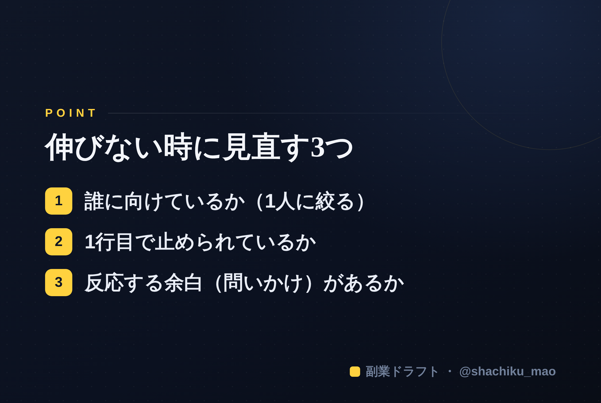

使い方
1. 「タイトルをコピー」→ note のタイトル欄に貼る
2. オレンジのラベルの画像（見出し画像）を note の見出し画像に設定
3. 「本文1をコピー」→ note本文に貼る
4. 青いラベルの位置（本文の途中）に、同じ名前の画像をアップして挿入
5. 「本文2をコピー」→ 続きを貼る
※ 見出しが普通の文字になったら、その行を選んで「大見出し」に設定してください
1. 「タイトルをコピー」→ note のタイトル欄に貼る
2. オレンジのラベルの画像（見出し画像）を note の見出し画像に設定
3. 「本文1をコピー」→ note本文に貼る
4. 青いラベルの位置（本文の途中）に、同じ名前の画像をアップして挿入
5. 「本文2をコピー」→ 続きを貼る
※ 見出しが普通の文字になったら、その行を選んで「大見出し」に設定してください
発信が伸びないときに見直す3つのこと【チェックリスト】
見出し画像に設定：seo-11.png
毎日投稿しているのに反応がない——。発信が伸びないときは、やみくもに投稿数を増やす前に、"3つのポイント"を見直すと原因が見えてきます。この記事はそのチェックリストです。
①「誰に向けているか」が、ぼやけていないか
伸びない投稿の多くは、"みんな"に向けて書かれています。でも、みんなに向けた言葉は、誰にも刺さりません。
✅ チェック：その投稿は「どんな人の、どんな悩み」に向けていますか？ → 「1年前の自分」など、たった1人を思い浮かべて書き直すと変わります。
②「1行目」で止められているか
SNSは1行目で読むかどうかが決まります。当たり障りのない出だしだと、そのままスクロールされます。
✅ チェック：1行目に、数字・断定・意外性・問いかけのどれかが入っていますか？ → 入っていなければ、1行目だけ5案作って一番強いものに差し替える。
③「反応する余白」があるか
情報を伝えて終わり、だと反応は生まれません。読んだ人が"ひとこと言いたくなる"隙が必要です。
✅ チェック：投稿の最後は、問いかけや二択で終わっていますか？ → 「あなたはどっち派？」のように、答えやすい問いで締める。
伸びない＝失敗ではない
反応が薄い投稿は、"データ"です。どの切り口が刺さらなかったかが分かれば、次に活かせます。伸びている人も、最初から伸びていたわけではありません。見直して、試して、を続けた人が残っています。
本文中に挿入：seo-11-body.png（この記事のポイント）

まとめ
- 誰に向けているか（1人に絞る）
- 1行目で止められているか
- 反応する余白（問いかけ）があるか
※ ここからは宣伝です。 「誰に・何を・どう書くか」をAIと整理できる自作ツール「副業ドラフト」を用意しています。ヒヤリング・強み棚卸し・Threads3本まで無料で試せます → https://note-threadssf.onrender.com
🎁 伸びる投稿の型は公式LINEで無料配布中 → https://lin.ee/RzyA13P
役に立ったら、スキ＆フォローで応援してもらえると嬉しいです😊